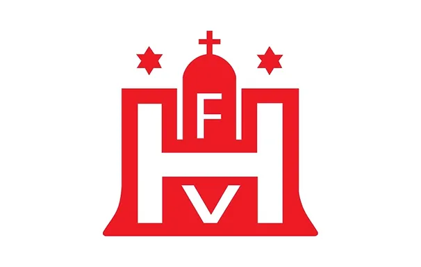
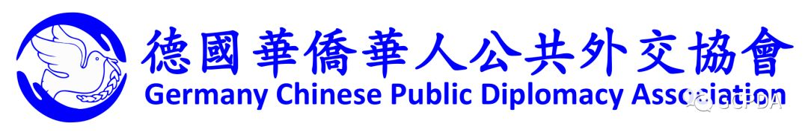
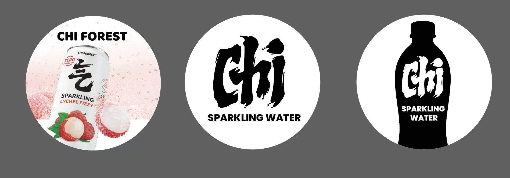
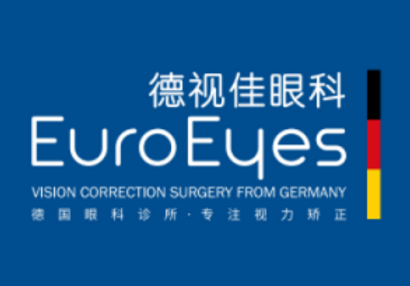
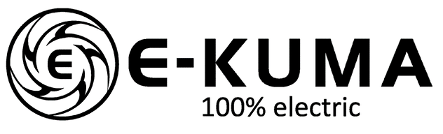
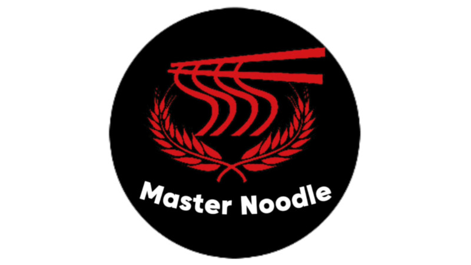

Hamburger Sportbund / 汉堡体育联合会（HSB)
Der Hamburger Sportbund (HSB) ist der Dachverband der Sportvereine und -verbände in Hamburg. Er fördert
den Sport in der Stadt, unterstützt die Vereine und setzt sich für die Interessen der Sportler ein. Der
HSB bietet zahlreiche Programme und Dienstleistungen an, um die sportliche Entwicklung und das
Gemeinschaftsgefühl zu stärken.
汉堡体育联合会（HSB）是汉堡市体育俱乐部和协会的总会。它促进城市体育的发展，支持俱乐部，并为运动员的利益而努力。HSB提供众多项目和服务，以加强体育发展和社区意识。
Hamburger Fußball-Verband / 汉堡足球协会（HFV)
Der Hamburger Fußball-Verband (HFV) ist der Dachverband für alle Fußballvereine in Hamburg. Er fördert
den Fußball in der Stadt, unterstützt die Vereine und setzt sich für die Interessen der Spieler ein. Der
HFV bietet zahlreiche Programme und Dienstleistungen an, um die sportliche Entwicklung und das
Gemeinschaftsgefühl zu stärken.
汉堡足球协会（HFV）是汉堡市所有足球俱乐部的总会。它促进城市足球的发展，支持俱乐部，并为球员的利益而努力。HFV提供众多项目和服务，以加强体育发展和社区意识。

German Chinese Public Diplomacy Association / 德国华侨华人公共外交协会 （GCPDA）
Die German Chinese Public Diplomacy Association (GCPDA) ist eine Organisation, die sich der Förderung
des kulturellen Austauschs und der Zusammenarbeit zwischen Deutschland und China widmet. Sie unterstützt
Projekte in den Bereichen Bildung, Kultur und Sport und setzt sich für die Stärkung der Beziehungen
zwischen den beiden Ländern ein.
德国华侨华人公共外交协会（GCPDA）是一家致力于促进中德文化交流与合作的组织。协会支持教育、文化和体育领域的项目，并致力于加强两国之间的关系。

Chinese Association of Hamburg Students / 汉堡学联（CAVH)
Die Chinesische Studentenvereinigung Hamburg (CAVH) ist eine Organisation, die chinesische Studenten in
Hamburg unterstützt. Sie fördert den kulturellen Austausch, bietet Unterstützung bei akademischen und
sozialen Fragen und organisiert verschiedene Veranstaltungen, um das Gemeinschaftsgefühl zu stärken.
汉堡学联（CAVH）是一个支持汉堡中国学生的组织。它促进文化交流，提供学术和社会问题的支持，并组织各种活动以加强社区意识。

Chi Forest Sparkling Water / 元气森林气泡水
Chi Forest ist eine führende Marke für kohlensäurehaltige Getränke aus China. Sie bietet eine breite
Palette von gesunden und erfrischenden Getränken, die sich durch ihren geringen Kaloriengehalt und
natürlichen Geschmack auszeichnen. Chi Forest hat sich weltweit einen Namen gemacht und ist besonders
bei gesundheitsbewussten Verbrauchern beliebt.
元气森林是中国领先的气泡水品牌，提供多种健康且清爽的饮品，以低卡路里和天然口感为特色。元气森林在全球范围内享有盛誉，尤其受到注重健康的消费者的喜爱。

Chen Coaching
Chen Coaching ist eine professionelle Coaching- und Beratungsfirma mit Sitz in Deutschland. Sie bietet
maßgeschneiderte Lösungen für persönliche und berufliche Entwicklung, einschließlich Führungstraining,
Karriereberatung und interkulturelle Kommunikation. Mit einem Fokus auf individuelle Bedürfnisse und
Ziele unterstützt Chen Coaching Kunden dabei, ihr volles Potenzial zu entfalten.
Chen Coaching 是一家位于德国的专业辅导和咨询公司。公司提供针对个人和职业发展的定制解决方案，包括领导力培训、职业规划咨询以及跨文化交流。Chen Coaching
专注于客户的个人需求和目标，帮助客户充分发挥潜力。
EuroEyes / 德视佳眼科
EuroEyes ist eine führende Klinikgruppe für Augenlaser- und Linsenoperationen in Deutschland. Sie
bietet modernste Behandlungsmethoden zur Korrektur von Fehlsichtigkeiten und zur Verbesserung der
Sehkraft. EuroEyes hat sich einen Namen gemacht durch ihre hohe Qualität und ihren exzellenten Service.
德视佳眼科是德国领先的眼科激光和晶体手术诊所集团。它提供最先进的治疗方法来矫正视力缺陷和改善视力。德视佳以其高质量和卓越的服务而闻名。

Deutsche Vermögensberatung / 德国理财顾问公司（DVAG)
Die Deutsche Vermögensberatung (DVAG) ist ein führendes Finanzberatungsunternehmen in Deutschland. Sie
bietet umfassende Beratung und maßgeschneiderte Lösungen in den Bereichen Vermögensaufbau,
Altersvorsorge, Versicherungen und Immobilienfinanzierung. DVAG zeichnet sich durch ihre hohe
Beratungsqualität und ihren exzellenten Kundenservice aus.
德国理财顾问公司（DVAG）是德国领先的金融咨询公司。它在财富积累、养老保障、保险和房地产融资等领域提供全面的咨询和量身定制的解决方案。DVAG以其高质量的咨询服务和卓越的客户服务而闻名。
Kaytrip / 开元周游
Kaytrip ist ein führendes Reiseunternehmen, das sich auf maßgeschneiderte Reisen und Touren für
chinesische Touristen in Europa spezialisiert hat. Das Unternehmen bietet eine Vielzahl von
Dienstleistungen an, darunter individuelle Reiseplanung, Gruppenreisen, Hotelbuchungen und
Transportlösungen. Kaytrip ist bekannt für seine hohe Servicequalität und seine umfassende Kenntnis der
europäischen Reiseziele.
开元周游是一家领先的旅游公司，专门为中国游客提供欧洲定制旅行和旅游服务。公司提供多种服务，包括个性化旅行规划、团队旅游、酒店预订和交通解决方案。开元周游以其高质量的服务和对欧洲旅游目的地的全面了解而闻名。
E-Kuma
E-Kuma ist ein Spezialist für Elektroroller mit Sitz nahe Hamburg. Durch enge Zusammenarbeit mit
chinesischen Herstellern bietet e-kuma hochwertige, preiswerte Modelle. Ein großer Showroom ermöglicht
Probefahrten. Dank direktem Import ohne Zwischenhändler sind schnelle Lieferzeiten und attraktive Preise
garantiert. Werkstatt und Ersatzteile sichern besten Kundenservice.
E-Kuma 专注于电动踏板车，位于汉堡附近。与中国制造商紧密合作，提供高品质且价格优惠的车型。展厅可试驾，直接进口确保快速交付和有竞争力的价格。自有车间与备件库存，提供优质售后服务。

Master Noodle
Master Noodle befindet sich im FoodSky der Europa Passage in Hamburg und ist spezialisiert auf
handgezogene Biang Biang Nudeln, eine chinesische Spezialität. Die Zubereitung dieser breiten,
elastischen Nudeln erfolgt traditionell per Hand, was ihnen eine besondere Textur verleiht. Neben den
Nudeln bietet Master Noodle auch traditionelle Dumplings mit Schweinefleisch sowie Suppen mit
geschmortem Rindfleisch oder in vegetarischer Variante an.
Master Noodle位于汉堡Europa Passage的FoodSky，专门制作手工拉制的Biang Biang面，这是一道中国特色美食。 这种宽而有弹性的面条采用传统手工制作，赋予其独特的口感。
除了面条外，Master Noodle还提供猪肉馅的传统饺子，以及炖牛肉或素食选项的汤品。

![]()